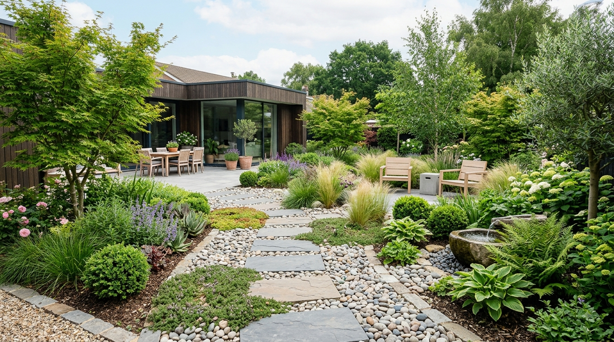
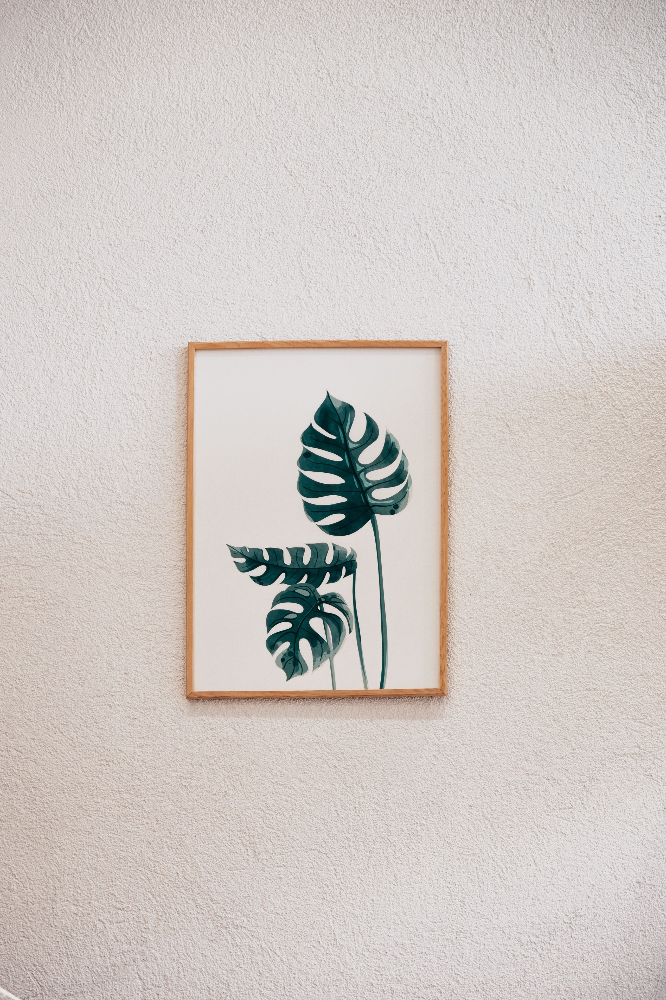
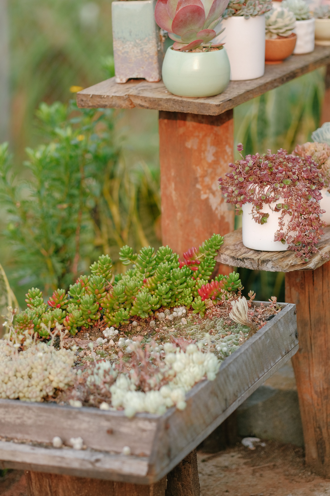

En este artículo
Introducción
Un jardín saludable no depende únicamente de regar las plantas de vez en cuando. Cada especie tiene necesidades diferentes de luz, agua, espacio, suelo y mantenimiento. Comprender estas diferencias es uno de los primeros pasos para cuidar mejor cualquier espacio verde.
La jardinería también es una actividad que se aprende con observación y práctica. Con el tiempo, es posible reconocer cambios en las hojas, comprender mejor las condiciones del suelo y establecer rutinas de mantenimiento más eficientes.
En esta guía encontrarás 25 técnicas prácticas que pueden ayudarte a desarrollar mejores hábitos de jardinería. Algunas son sencillas y pueden aplicarse en espacios pequeños, mientras que otras requieren más experiencia y conocimiento sobre las plantas.
Si estás comenzando, no es necesario intentar aplicar todo al mismo tiempo. Lo importante es observar, aprender de cada experiencia y adaptar los cuidados a las características de cada jardín.
25 técnicas para cuidar mejor de tu jardín
Cuidar un jardín de forma adecuada requiere observar las plantas, conocer sus necesidades y mantener una rutina constante. No todas las especies necesitan la misma cantidad de agua, luz o espacio, por lo que aprender a identificar estas diferencias es fundamental.
1. Observa tus plantas con frecuencia
Antes de intervenir, observa el estado general de las plantas. Las hojas, los tallos y el crecimiento pueden ofrecer señales sobre posibles necesidades de cuidado.
2. Conoce las necesidades de cada especie
Investiga las características de las plantas que tienes en casa. Algunas prefieren ambientes luminosos, mientras que otras se desarrollan mejor con luz indirecta.
3. Aprende a regar correctamente
Evita establecer una cantidad de agua idéntica para todas las plantas. La frecuencia del riego depende de factores como la especie, el recipiente, el suelo, la temperatura y la humedad ambiental.
4. Comprueba la humedad del suelo
Antes de volver a regar, comprueba si el sustrato todavía conserva humedad. Esta sencilla observación puede ayudar a evitar tanto la falta de agua como el exceso de riego.
5. Proporciona suficiente luz
La iluminación influye directamente en el desarrollo de muchas plantas. Coloca cada especie en un lugar compatible con sus necesidades de luz.
6. Mejora la calidad del suelo
Un suelo adecuado facilita el desarrollo de las raíces. Observa su textura, drenaje y composición antes de realizar cambios y utiliza productos apropiados para el tipo de planta.

7. Utiliza macetas con buen drenaje
Los recipientes necesitan permitir la salida del exceso de agua. Un drenaje deficiente puede favorecer condiciones poco adecuadas para las raíces.
8. Mantén las herramientas limpias
Limpiar las herramientas después de utilizarlas ayuda a mantenerlas en mejores condiciones y reduce la acumulación de tierra y residuos.
9. Retira las hojas secas
Retirar hojas secas o restos vegetales cuando sea necesario ayuda a mantener el espacio organizado y facilita la observación del estado de las plantas.
10. Elimina las malas hierbas
Las plantas espontáneas pueden competir por agua, espacio y nutrientes. Retíralas de manera cuidadosa, especialmente alrededor de plantas jóvenes.
11. Aprende a podar con criterio
La poda debe realizarse de acuerdo con las características de cada planta. Antes de cortar, conviene conocer cuándo y cómo debe podarse la especie correspondiente.
12. Protege las plantas de temperaturas extremas
Las temperaturas muy altas o muy bajas pueden afectar a determinadas especies. Durante los periodos extremos, observa las condiciones del espacio y adapta los cuidados cuando sea necesario.
13. Controla las plantas invasoras
Algunas plantas pueden crecer rápidamente y ocupar espacios destinados a otras especies. Vigila su crecimiento y evita que compitan innecesariamente con el resto del jardín.
14. Observa posibles señales de plagas
Revisa periódicamente las hojas y los tallos para identificar cambios inusuales. Detectar una alteración a tiempo facilita la búsqueda de una solución adecuada.
15. Evita utilizar productos sin conocerlos
Antes de utilizar fertilizantes o productos destinados al cuidado de las plantas, lee las instrucciones de la etiqueta y respeta las recomendaciones de uso y seguridad.
16. Fertiliza según las necesidades de la planta
La fertilización debe adaptarse a la especie y a las condiciones del cultivo. Más producto no significa necesariamente un mejor resultado.
17. Mantén una rutina de mantenimiento
Dividir las tareas durante la semana puede hacer que el cuidado del jardín resulte más sencillo. Revisar, regar, limpiar y observar regularmente ayuda a mantener una rutina.

¿Puede la jardinería convertirse en una profesión?
Sí. Los conocimientos de jardinería pueden servir como base para desarrollar experiencia en diferentes actividades relacionadas con el cuidado y mantenimiento de espacios verdes. Entre ellas pueden encontrarse el mantenimiento básico de jardines, el cuidado de determinadas plantas y la organización de espacios exteriores.
Sin embargo, aprender algunas técnicas no convierte automáticamente a una persona en profesional. La experiencia, la responsabilidad, la formación y la capacidad de comprender las necesidades de cada espacio son aspectos importantes para ofrecer un servicio de calidad.
También es recomendable conocer las normas aplicables en la localidad donde se pretenda trabajar y utilizar herramientas y productos siguiendo siempre las instrucciones de seguridad.
¿Qué servicios podría ofrecer un jardinero?
- Mantenimiento básico de jardines
- Poda y cuidado de determinadas plantas
- Limpieza y organización de espacios exteriores
- Mantenimiento de plantas ornamentales
- Preparación y mantenimiento de pequeños jardines
Antes de ofrecer cualquier servicio, conviene conocer las normas locales aplicables, trabajar de forma segura y ser transparente sobre las tareas que realmente se pueden realizar.
18. Organiza las tareas del jardín
Crear una pequeña lista de mantenimiento permite recordar tareas importantes y distribuirlas de acuerdo con el tiempo disponible.
19. Aprovecha el espacio disponible
Incluso un patio pequeño, una terraza o un balcón pueden convertirse en espacios verdes. La clave está en elegir plantas compatibles con las condiciones disponibles.
20. Elige plantas adecuadas para tu clima
Las condiciones climáticas de una región influyen en el desarrollo de las plantas. Elegir especies compatibles puede facilitar considerablemente su mantenimiento.
21. Agrupa plantas con necesidades similares
Organizar juntas determinadas plantas con necesidades parecidas de luz y agua puede facilitar la rutina de cuidado y aprovechar mejor el espacio.
22. Mantén el jardín limpio y ordenado
Retirar residuos, hojas acumuladas y objetos innecesarios ayuda a conservar un espacio exterior más organizado y facilita las tareas de mantenimiento.
23. Registra los cambios importantes
Anotar cuándo se realizó una poda, un trasplante o un cambio de ubicación puede ayudarte a comprender mejor la evolución de las plantas y planificar futuros cuidados.

24. Aprende de cada temporada
Las necesidades de un jardín pueden cambiar durante el año. Observar cómo reaccionan las plantas en diferentes estaciones permite ajustar progresivamente la rutina de mantenimiento.
25. Ten paciencia y aprende de la práctica
La jardinería requiere observación y constancia. No todas las plantas responden de la misma manera, por lo que cada experiencia puede convertirse en una oportunidad para aprender y mejorar.
Una habilidad puede crecer con el tiempo
Lo más interesante de la jardinería es que el aprendizaje no termina después de conocer unas cuantas técnicas. Cada jardín presenta condiciones diferentes y puede enseñar algo nuevo.
Si este conocimiento se combina con práctica, organización, estudio y una buena atención al cliente, puede convertirse en una habilidad con potencial para generar oportunidades.
Convierte la observación en un hábito
Una de las mejores herramientas de cualquier jardinero es aprender a observar antes de actuar. El color de las hojas, la firmeza de los tallos, la humedad del suelo y la aparición de nuevos brotes ofrecen información sobre el estado de las plantas. Observar con frecuencia permite detectar cambios pequeños antes de que se conviertan en problemas difíciles de corregir.
También es útil comparar una planta consigo misma y no únicamente con fotografías de internet. Las condiciones de luz, temperatura y humedad pueden producir diferencias normales. La observación continua ayuda a conocer qué es habitual en tu propio jardín.
Planifica las tareas por temporadas
No todas las tareas deben realizarse durante todo el año. La poda, la limpieza, la fertilización y determinados cambios de ubicación pueden tener momentos más adecuados según las especies y el clima. Preparar un calendario sencillo evita hacer trabajos innecesarios y permite concentrar la atención en lo que realmente necesita el jardín.
Un calendario también facilita el seguimiento. Puedes anotar cuándo realizaste una poda, cuándo cambiaste el sustrato o cuándo observaste por última vez una determinada planta. Con el tiempo, estas anotaciones se convierten en una referencia útil para mejorar tus cuidados.
Lleva un registro sencillo
Anotar cambios y tareas puede mejorar tus decisiones. No necesitas un sistema complicado: basta con registrar observaciones importantes, como cambios de crecimiento, problemas detectados o momentos de poda y trasplante.
Con el tiempo, este registro permite identificar patrones y comprender mejor el comportamiento de las plantas. También ayuda a evitar repetir tratamientos innecesarios y convierte la experiencia diaria en conocimiento útil.
Preguntas frecuentes sobre el cuidado del jardín
¿Cuál es la técnica más importante para cuidar un jardín?
No existe una única técnica que funcione para todos los jardines. Observar las plantas, conocer sus necesidades y adaptar el riego, la iluminación y el mantenimiento a cada especie son algunos de los aspectos más importantes.
¿Cuánto tiempo se necesita para aprender jardinería?
Las habilidades básicas pueden aprenderse progresivamente con práctica, pero desarrollar experiencia requiere tiempo. Cada tipo de planta, suelo y espacio presenta diferentes desafíos.
¿Se puede trabajar profesionalmente cuidando jardines?
Sí. El mantenimiento de jardines y el cuidado de plantas pueden formar parte de diferentes actividades profesionales. Sin embargo, es importante desarrollar experiencia, trabajar de forma responsable y conocer las normas aplicables a cada actividad.
¿Es necesario tener un jardín grande para aprender?
No. Muchas técnicas pueden practicarse en espacios pequeños, patios, terrazas e incluso con determinadas plantas cultivadas en macetas.
¿Cómo puedo mejorar mis conocimientos de jardinería?
Una buena forma de avanzar es combinar lectura, observación, práctica y registro de los resultados. También puede ser útil estudiar las características de las especies que se cultivan en cada región.
Conclusión
Cuidar un jardín es un proceso que combina observación, conocimiento y constancia. No todas las plantas necesitan los mismos cuidados y, por eso, aprender a identificar sus características es más importante que seguir una única rutina para todo el espacio.
Las 25 técnicas presentadas en esta guía pueden servir como punto de partida para mejorar el mantenimiento de un jardín. Algunas pueden incorporarse fácilmente a la rutina diaria, mientras que otras requieren práctica y un mayor conocimiento de las plantas y de las condiciones ambientales.
La mejor manera de avanzar es observar los resultados, aprender de cada experiencia y adaptar los cuidados cuando sea necesario. Con paciencia y práctica, la jardinería puede convertirse en una habilidad cada vez más desarrollada.
Y cuando una persona decide llevar estos conocimientos al ámbito profesional, debe hacerlo de manera responsable, respetando las normas aplicables y ofreciendo únicamente servicios para los que tenga preparación adecuada.